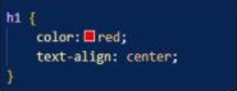
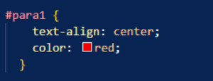
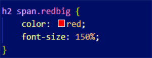
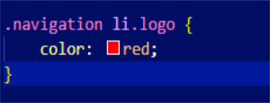
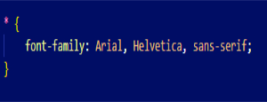

According to 'MDN web docs', the CSS selectors module has more than 60 selectors and 5 combinators. They define the patterns to select elements to which a set of CSS rules are then applied along with their specificity. Other modules provide additional pseudo-class selectors and pseudo-elements.
| Selector | Example | Description |
|---|---|---|
| Element Selector |  | Here, all <h1> elements will have their text coloured red and be aligned to the centre. |
| id Selector |  | Writing a (#) selects a specific HTML id attributed element. The id of an element is unique within a page, so the id selector is used to select one unique element! |
| Class Selector |  | This .class selector selects <h2> <span> elements with a specific class attribute. To select elements with a specific class, write a period (.) character, followed by the name of the class. |
| Class Selector 2 |  | Selects the class of an element inside a class! |
| Select All Elements |  | Using * selects and applies styling to all elements! |